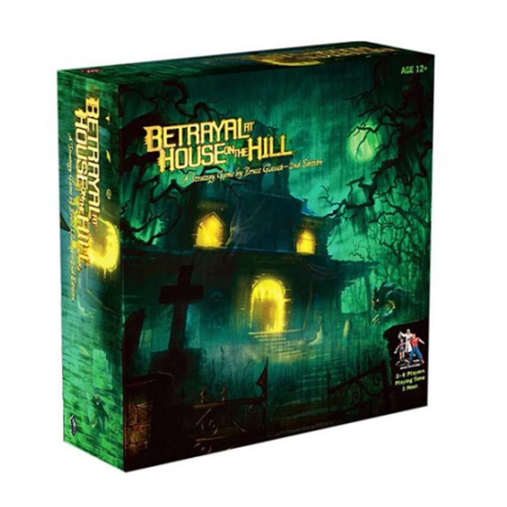

Betrayal at House on the Hill starts out as a fully cooperative game with players exploring an old mansion. At some point during the game, one of the players becomes a traitor (who or when is unknown at the start) and will turn on their former teammates. The haunts, as they are called, are all fairly unique with each having its own story and goals for both teams.